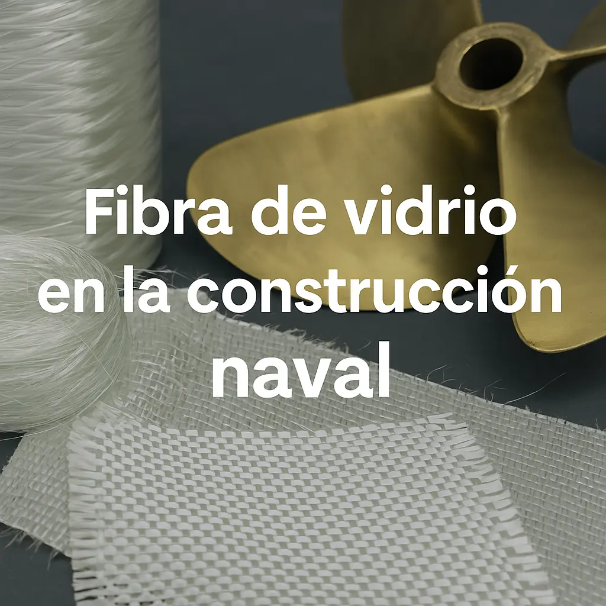

¿Por qué elegir fibra de vidrio en la construcción de embarcaciones?
Publicado por CONAVRE | Abril 2025
Durante las últimas décadas, la fibra de vidrio ha revolucionado la industria naval. Su surgimiento permitió diseñar embarcaciones más ligeras, económicas y versátiles que las clásicas de acero o madera, manteniendo niveles de seguridad y durabilidad sin precedentes.
En CONAVRE adoptamos esta tecnología desde el primer día. Gracias a su compatibilidad con distintos tipos de resinas y refuerzos, podemos ajustar el proceso de laminado para cada proyecto, ya sea una lancha rápida de turismo o una barcaza de carga.
¿Qué es la fibra de vidrio?
La fibra de vidrio es un material compuesto formado por finos filamentos de vidrio tejidos o en mantas, que se impregnan con resinas termoendurecibles (poliéster, viniléster o epóxicas). Una vez curada, esta matriz ofrece una extraordinaria relación resistencia-peso y una excelente resistencia a la corrosión.
Su proceso de fabricación permite crear moldes complejos y formas hidrodinámicas con gran fidelidad, optimizando la eficiencia en el agua y reduciendo el consumo de combustible.
Ventajas principales
- Durabilidad: Gracias a su inercia química, la fibra de vidrio no sufre corrosión ni pudrición y resiste ataques de rayos UV, salitre y hongos marinos durante décadas.
- Mantenimiento sencillo: A diferencia de la madera o el acero, basta con inspecciones periódicas y retoques puntuales de pintura marina para mantener el casco en condiciones óptimas.
- Adaptabilidad: Su proceso de moldeo en moldes maestros ofrece total libertad de diseño, permitiendo francobordos amplios, espacios interiores ergonómicos y formas de casco a medida.
- Ligereza: Un casco de fibra de vidrio puede llegar a ser un 30 % más ligero que uno de acero, mejorando la maniobrabilidad y reduciendo el consumo energético.
- Costo-beneficio: Aunque la inversión inicial puede ser similar a la de un casco metálico, sus menores costos de mantenimiento y vida útil prolongada la convierten en la opción más rentable.
¿Es la mejor opción para mi proyecto?
Cada proyecto tiene sus particularidades: volumen de construcción, requisitos de carga o velocidad, condiciones de operación y presupuesto. La fibra de vidrio se adapta tanto a series cortas como a producciones industriales, por lo que es ideal para embarcaciones de pesca, recreativas, turísticas o de transporte ligero.
Nuestro equipo técnico en CONAVRE estudia cada caso y recomienda el tipo de resina, refuerzos y acabado más adecuado, garantizando que tu embarcación cumpla con los estándares marítimos y tus expectativas de rendimiento.
Confía en los especialistas
Contamos con profesionales certificados y años de experiencia en fibra de vidrio. Si buscas fiabilidad a largo plazo y resultados de alto nivel, la experiencia de un astillero especializado en fibra de vidrio es la mejor garantía para tu proyecto.